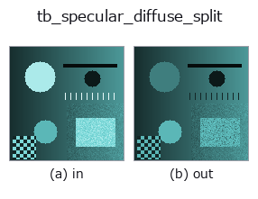

typed op• 資料種類:rgbimage → rgbimage
• 呼叫:fullseye.apply(img, "tb_specular_diffuse_split", a=0.5, b=0.5)(2-D 的模型是一張圖 + 兩個純量旋鈕 a,b∈[0,1])

*圖為在 128×128 合成輸入上實際執行的輸出。左為輸入，右為輸出。點雲以俯視散點顯示(亮度 = z)，一維序列為折線，體資料為沿 z 的最大值投影，影片為中間影格，複數影像為振幅；無法成像的回傳值直接顯示數值。*
*旋鈕 a 不改變輸出(實測: 0.1 / 0.5 / 0.9 相同)。*
*旋鈕 b 不改變輸出(實測: 0.1 / 0.5 / 0.9 相同)。*
階段(前置運算子 → 本運算子，由左至右):
▸ tb_specular_diffuse_split: stages (docs site)
換別的影像(合成場景 / 照片 / 硬幣。上排為輸入，下排為對應輸出。旋鈕取預設):
▸ tb_specular_diffuse_split: other inputs (docs site)
將線性 RGB 影像分離為漫反射（本體色）與鏡面反射（介面）兩部分。→ (diffuse, specular)，皆為 (H, W, 3)。
> 以下的詳細說明為原文 —— 摘要與標題已翻譯。
Shafer's dichromatic reflection model writes the radiance of a dielectric as
`I(x) = m_d(x) * L(x) + m_s(x) * G`: a body term carrying the surface
colour `L and an interface term carrying the **illuminant** colour G`.
The specular part therefore occupies a single direction in RGB, and
separating it is a projection with a closed form — no iteration, no
optimisation, no learned prior.
Two regimes, chosen by *body_rgb*:
• **`body_rgb given** — a (3,) colour or an (H, W, 3)` map. Each
pixel solves the 3-equation, 2-unknown least-squares system exactly. This
is the textured-surface path: on a synthetic image built from a known
`(m_d, m_s)` it returns them with a maximum absolute error of 4.0e-15
for a uniform body colour and 2.9e-15 for a per-pixel colour map
(measured in `tests/test_specularity.py`).
• **`body_rgb` omitted** — one material is assumed. The
illuminant-orthogonal part of the image is then exactly rank one, so the
body direction is its leading singular vector; the unobservable component
of `L along G is fixed by requiring m_s >= 0` with the minimum
over the image equal to zero. Maximum absolute error 5.0e-16 on the same
synthetic image. At least one lit pixel must be specular-free — see
below, this is the assumption that actually bites.
*illuminant_rgb* is a direction; only its orientation matters and it is
unit-normalised internally. `(1, 1, 1)` is the white-balanced case. Get it
from :func:illuminant_from_dichromatic_planes when you have two or more
materials in frame.
Two guards protect the uniform-body path, and both are needed — the
adversarial pass found the first one alone lets a two-material image
through:
• *max_rank_ratio* — the second singular value of the illuminant-orthogonal
part over the first. Measured on the synthetic bump: 4.6e-16 noiseless,
0.0175 at 0.5% Gaussian noise, 0.0348 at 1%, 0.0694 at 2%, 0.173 at 5%;
a two-material image with cyclically permuted albedos gives 0.574. The
default 0.1 sits between the 2% and 5% noise measurements. `None`
disables it.
• *max_negative_frac* — the fraction of pixels whose fitted body
coefficient comes out negative, which cannot happen for one material.
This is what catches the case the rank test misses: two albedos whose
illuminant-orthogonal chromaticities are nearly anti-parallel still span
one line, and that image measured 0.0815 on the rank test — under the
default threshold, i.e. accepted — while 50% of its pixels fit a negative
body coefficient. With both guards disabled that image returns a diffuse
map wrong by 1.03 in absolute radiance on an image whose maximum is 0.99,
with no exception and no NaN. `None` disables it.
**Both guards bound gross violations only, and that is not fixable by a
better threshold.** A texture whose chromaticity drifts *along* the body
direction rather than away from it measured a rank ratio of 0.0641 — under
the default — with every body coefficient positive, so neither guard fires,
and the returned diffuse map was wrong by 0.198. It cannot be separated from
noise by any threshold, because it is the same measurement: 1% Gaussian
noise on that scene gives 0.0348 and 2% gives 0.0694, and the texture sits
between them. The answer for a surface that might be textured is
`body_rgb`, not a cleverer number here.
Honest limits. (1) *Without `body_rgb`, one lit pixel must be
specular-free.* The rendered-lobe measurement shows exactly what it costs
when none is: for a Blinn-Phong highlight on a Gaussian bump the maximum
diffuse error is 6.5e-11 at shininess 200 (where the lobe tail underflows to
9.1e-11), 0.0019 at shininess 48 (tail 0.0026) and 0.175 at shininess 8
(tail 0.243) — the error *is* the darkest highlight in the frame, because
that is the constant the constraint cannot see. (2) *The known-body path is
conditioned by `1/(1 - b^2) where b` is the cosine between the body
and illuminant colours.* A texture reaching `|b| = 0.99999` (an almost
neutral grey under a white lamp, amplification 6.4e+04) measured 5.9e-12
against 2.9e-15 for the same texture kept at `|b| <= 0.965`. Near-grey
surfaces are where colour-based separation is weakest, and no amount of
arithmetic care changes that.
Raises `ValueError: *image_rgb* is not (H, W, 3)`, is complex /
masked / non-finite / string-typed, or exceeds :data:MAX_PIXELS;
*illuminant_rgb* is not a non-zero 3-vector; the image is identically zero;
the image has no component orthogonal to the illuminant (body colour
parallel to it, so no split exists); either guard above fires; *body_rgb*
has the wrong shape, a zero-length colour, or is parallel to the
illuminant.
Returns `(diffuse, specular) with diffuse + specular == image_rgb` to
machine precision in both regimes: measured 1.1e-16 on the uniform-body
route, which forms the diffuse as `image - specular`, and 2.1e-15 on the
known-body route, which forms both parts from the solved coefficients and
so accumulates a little more.
Typed bridge of the specular op `specular_diffuse_split into the 2-D evolution registry: the same implementation, called under the op(v, a, b) convention. a drives max_rank_ratio (default 0.1) and b drives max_negative_frac` (default 0.02).
• 範例資料目錄(下載 URL / 授權) —— 2-D 用 skimage.data(BSD/公有領域)加合成圖,3-D 給出真實資料源(Stanford/PDS 等)的下載 URL。
• 運算子來歷與參考文獻 —— 該運算子族所依據的研究/方法出處。
下面的程式已確認可以執行(與圖相同的輸入)。在 Studio 說明中，此區塊會變成按鈕，可當場載入並執行。
img_to_rgb 0.50 0.50 tb_specular_diffuse_split 0.50 0.50
▸ Load this pipeline · Load & run
下面的範例呼叫的是底層帳本運算子 specular_diffuse_split。此橋接運算子只是把同一實作適配為 fn(v, a, b) 慣例，行為完全相同(只是呼叫形式不同)。
• specular_photometric — py -3.11 examples/specular_photometric.py
rgbimage 作為輸入)identity · tb_wetness · tb_sensor_capture · tb_specular_coefficient_map · tb_specular_free_transform · tb_rgb_to_quaternion
typed)tb_points_to_voxel · tb_estimate_point_normals · tb_iss_keypoints · tb_project_points · tb_render_point_depth · tb_statistical_outlier_removal · tb_radius_outlier_removal · tb_voxel_grid_downsample
*Provenance: ops.py — 2D 運算子登記表。本條目由 tools/opdocs.py md 自動產生(請勿手動編輯)。*
© 2026 Kazufumi Furuse — Fullseye operator documentation. Licensed under Apache-2.0.
{kind=link}
{kind=link}